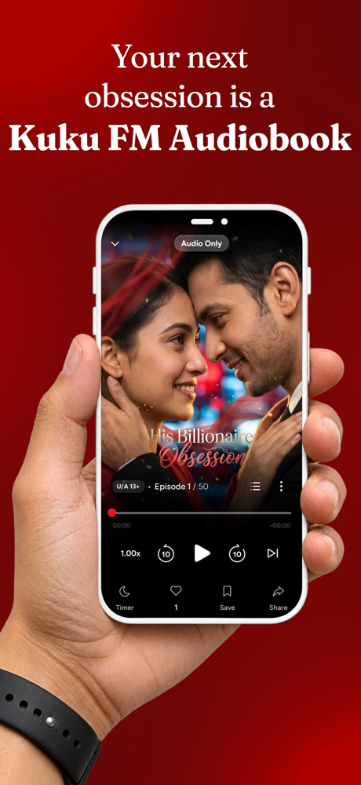
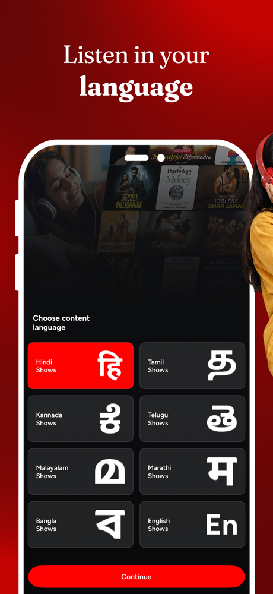
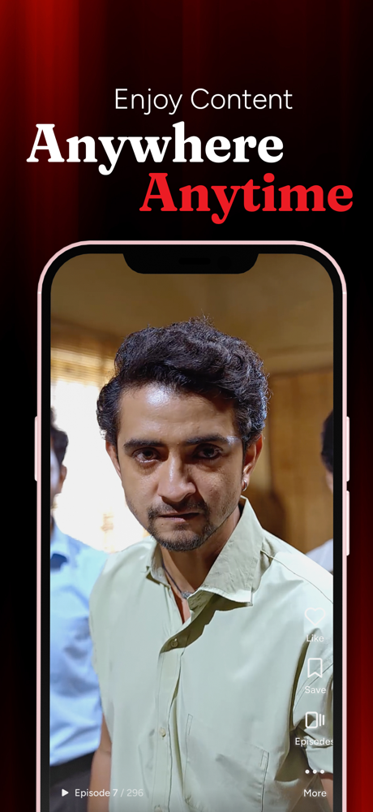
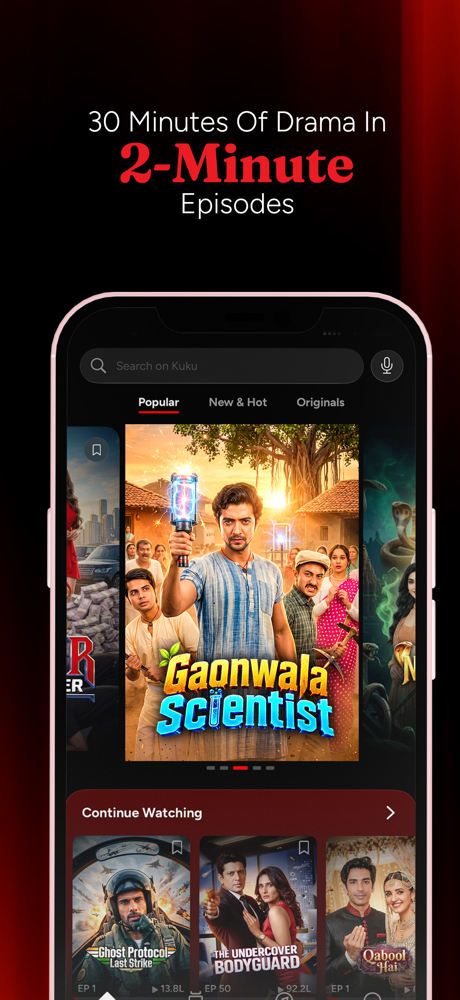

India's largest vernacular audio & micro-drama subscription platform — audiobooks, self-help and original audio dramas in 10+ languages. An independent product-analyst teardown.
Kuku FM has won vernacular audio — and just proved the model: FY26 revenue jumped ~6× to ₹1,484 Cr and the business swung to profit (~₹183 Cr PAT), heading into an IPO targeting a ~₹15,000 Cr valuation. The one friction left is the one its users complain about most — in my analysis of 1,200 real Play Store reviews, payments & autopay is the #1 complaint, the leak that still caps conversion and renewal even in a now-profitable business.
Kuku FM is serialised, cliffhanger-driven audio — not Western-style podcasts. After a 2018 pivot, that format is what made retention work. Kuku TV extends the same catalogue into vertical micro-drama video, which hit #1 on India's App Store within four months of launch.




Tier-2/3 India, vernacular-first listeners that global players under-serve — commute, chores and bedtime listening occasions.
Freemium → subscription at ₹99/mo or ₹899/yr (often via a ₹1 trial), plus Kuku Coins that unlock single series without subscribing.
A huge originals slate across 10+ languages, now scaled with AI-assisted production — serialised hooks that convert day-1 attention into habit.
FY26 revenue grew ~6× to ₹1,484 Cr and the company turned a ~₹183 Cr profit (from a ~₹153 Cr loss in FY25). The economics now hinge on defending that margin — ARPU, content efficiency and retention — as content and IPO-readiness costs scale.
A 150k+ hour library and a heavy originals slate are the big spend. The lever is amortisation: each hour must earn across many listeners, so catalogue efficiency (which titles drive subscriptions) is a core analyst question.
At subscription economics, a user who renews a second year is worth far more than a new trial. Reducing involuntary churn — much of it payment failure — is the cheapest growth there is.
The path to profit is conversion × retention, not catalogue size. A single point of trial-to-paid conversion, or a point of renewal retention, moves the P&L more than another thousand hours of content — and both are squarely analytics-and-experiment territory.
FY26 operating revenue reached ~₹1,484 Cr, up from ₹242 Cr in FY25, on subscriber growth past 10M+ paying users and the Kuku TV launch.
Kuku FM leads Indian-language audio, but Pocket FM (the category pioneer) still edges it on app-store satisfaction. Current-version iOS ratings:
Kuku TV (4.23★) already out-rates Kuku FM (4.10★) — the video product lands cleaner. Pocket FM leads at 4.54★. Kuku FM's rating is dragged by billing complaints, not content — the exact fix the review analysis points to.
Kuku's job is to defend the vernacular moat while closing the satisfaction gap — and the fastest win is removing payment friction that's visibly costing it stars.
A dated sample of 600 public Google Play reviews (Kuku FM, 2026-08-21 to 2026-11-16). This is real data — the only user-level evidence in this teardown. Reviews are self-selected; user names are not stored. Themes are keyword-tagged, and the average rating per theme shows where the pain is.
Keyword-tagged · sorted by mentions · red average = the pain
Representative reviews · verbatim
The recent public sample has soured to 2.53★. The angriest themes are payments / refunds (avg 1.08★) and subscription pricing (1.13★), with a spike of app / tech complaints (1.35★) in the latest window — corroborating the case study's finding that billing and reliability, not content, are the drag.
The company facts above are real. The rest is how I'd instrument and grow the product — the metric tree, the conversion funnel and what retention has to look like. Funnel and cohort figures are illustrative frameworks (grounded in my own Kuku case study), clearly marked.
One number the org can move, decomposed into the levers a team owns.
Paid conversion is where Kuku leaks the most — only a small share of huge listening turns into paying subscriptions, and the paywall & payment steps are the chokepoints.
The biggest single drop is at the paywall, not in the content — episode-survival curves fall gently, then cliff exactly where the wall sits. In a synthetic A/B, moving the paywall from episode 6 to 8 for high-hook genres lifted subscribe rate among wall-reachers ~7pp. Retention should flatten into a high plateau once the habit forms — the job is to shorten time-to-habit.
Each tied to one lever in the metric tree, with a primary metric and a guardrail so we don't win one number by breaking another.
| Hypothesis | Lever | Primary metric | Guardrail |
|---|---|---|---|
| Move the paywall ep 6 → 8 for high-hook genres — more free runway, higher intent at the wall. | conversion | Paywall → subscribe | ARPPU, total revenue |
| Fix trial-to-paid billing — explicit price & consent, one-tap cancel, UPI-failure retry. (Payments is the #1 real complaint.) | retention | Payment success & involuntary churn | Refund rate |
| Genre-aware retention — cliffhanger notifications for high-D1/low-D30 genres to turn a strong start into a habit. | retention | D7 / D30 retention | Notification opt-outs |
| Vernacular discovery — language-aware home-feed ranking to lift activation for tier-2/3 first sessions. | activation | First-session → 3 episodes | Content cost / play |
Evidence note: the "payments is #1" finding comes from my own labelling of 1,200 real public Play Store reviews (Kuku FM + Kuku TV). Funnel, cohort and ARPU charts are clearly-labelled illustrative frameworks, not reported Kuku figures.
Inc42 / MediaNama — FY26 RoC filings: revenue ~₹1,484 Cr (from ₹242 Cr FY25), swung to
~₹183 Cr profit from a ₹153 Cr FY25 loss · DRHP coverage — confidential filing Jun 2026,
~₹3,500 Cr raise at ~₹15,000 Cr (~$1.8B) target · $85M Series C at $550M (Oct 2025) ·
CEOVine — founders, 2018 pivot, pricing, Kuku TV milestones · kukufm.com — languages, catalogue ·
Apple App Store Search API — live iOS ratings · my own analysis of 1,200 real Play Store reviews and
a synthetic funnel/paywall case study. Figures as of Sep 2026.
Illustrative items (ARPU waterfall, signup funnel, cohort grid, subscriber trajectory) are
analyst frameworks shown to demonstrate method — they are not reported Kuku figures.